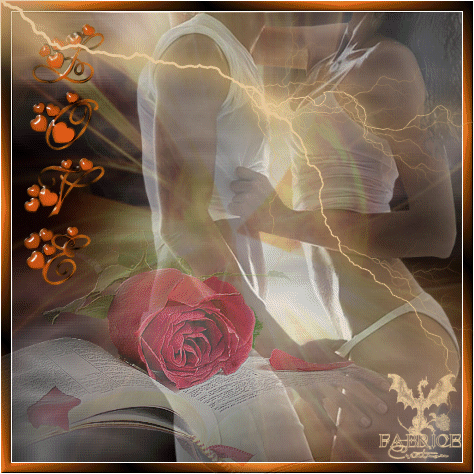
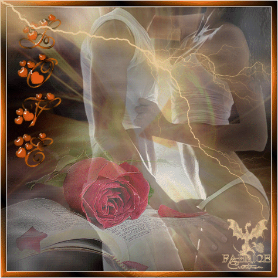
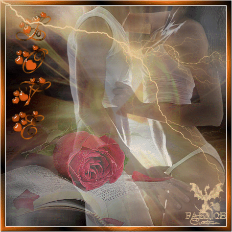

Made by
Seth Kranzler
THE THIRD DAY
The Duc was abroad at nine o'clock
'Twas he who volunteered to be the first to lend a hand in the lessons Duclos was to administer to the little girls
He installed himself in an armchair and for one long hour submitted to various fondlings, masturbations, pollutions, and to a wide variety of tricks performed by each of those little ones who, throughout it all, were guided and supervised by their mistress; and as may be readily imagined, his spirited temperament was furiously aroused by the ceremony
He was obliged to make unbelievable efforts to preserve his fuck from loss, but, more or less in control of himself, he managed to contain himself and returned to his friends in triumph, boasting that he'd just weathered an assault he defied any one of them to beat off as phlegmatically
That brought on considerable wagering, the stakes were high, a fine of fifty louis was ultimately imposed upon whoever discharged during the lessons
Instead of taking breakfast and conducting searches, this morning was employed in drawing up a program for the seventeen orgies planned for the end of each week, in this way definitively to fix the dates of the deflowerings now that, after having become better acquainted with the subjects than they had been previously, they were able to pass legislation
In that this timetable in the most decisive manner regulated all the operations to be executed during the campaign, we have deemed it necessary to provide the reader with a copy: it seems to us that, once he has perused it and familiarized himself with the subjects' several destinies, he will be able to take a keener interest in their individual persons
""
"SCHEDULE OF WORKS TO BE ACCOMPLISHED"
DURING THE REMAINDER OF THE PARTY
On the 7th of November, at which time the first week will have drawn a close, Messieurs shall proceed in the morning to the marriage of Michette and Giton, and those two wedded individuals, whose age forbids them from conjoining, as is true in the cases of three following couples, shall be separated on their marriage night, for to closet them together would be as futile as this ridiculous ceremony which will serve only to create diversion during the day
That same evening, punishments which have accumulated and been entered on the list kept by the month's presiding officer shall be meted out
"On the 14th, Messieurs shall in the same way effect the marriage of Narcisse and Hébé, with the same clauses as those cited above"
On the 21st, in the same way, Colombe and Zélamir shall be married
On the 28th, Cupidon and Rosette
On the 4th of December, Champville's narrations having prepared the way for the following enterprises, the Duc shall deflower Fanny
On the 5th, the said Fanny shall be wedded to Hyacinthe who, in the presence of the company assembled, shall take his pleasure with his young wife
In such will consist the fifth week's festival, and the corrections shall take place in the evening as usual, because the marriages shall be celebrated in the morning
"On the 8th, Curval shall deflower Michette"
On the 11th, the Duc shall deflower Sophie
On the 12th, to celebrate the sixth week's festival, Sophie shall be married to Céladon, and the clauses cited for the above-mentioned marriage shall be made to apply to this one; this shall not be repeated for those to follow
"On the 15th, Curval shall deflower Hébé"
On the 18th, the Duc shall deflower Zelmire, and on the 19th, in order to celebrate the seventh week's festival, Adonis shall marry Zelmire
""

"On the 20th, Curval shall deflower Colombe"
""
On the 25th, Christmas Day, the Duc shall deflower Augustine, and on the 26th, for the eighth week's festival, Zéphyr shall marry Augustine
On the 29th, Curval shall deflower Rosette, and all the foregoing arrangements have been made to insure that Curval, less well membered than the Duc, be provided with more youthful girls
On the 1st of January, the first day of the year and one upon which Martaine's newly begun narration will influence imaginations to consider new pleasures, the sodomistic deflorations shall be inaugurated, and shall proceed in the following order:
On the 1st of January, the Duc shall sound Hébé's ass
""
"On the 2nd, in celebration of the ninth week, Hébé, having been plumbed fore by Curval, from behind by the Duc, shall be turned over to Hercule, who, before the company assembled, shall employ her for purposes to be specified upon the occasion"
On the 4th, Curval shall embugger Zélamir
On the 6th, the Duc shall embugger Michette; on the 9th, in celebration of the tenth week's festival, the said Michette, who will have been deflowered fore by Curval, and whose ass will have been tried by the Duc, shall be turned over to Bum-Cleaver, that he may enjoy her, etc
", etc"
"On the 11th, the Bishop shall sodomize Cupidon"
On the 13th, Curval shall sodomize Zelmire
On the 15th, the Bishop shall sodomize Colombe
On the 16th, for the eleventh week's festival, Colombe, whose cunt will have been deflowered by Curval, her ass by the Bishop, shall be turned over to Antinoüs, who shall enjoy her, etc
On the 17th, the Duc shall embugger Giton
On the 19th, Curval shall embugger Sophie
On the 21st, the Bishop shall embugger Narcisse
""
On the 22nd, the Duc shall embugger Rosette
On the 23rd, for the twelfth week's festival, Rosette shall be turned over to Invictus
On the 25th, Curval shall march into Augustine's behind
On the 28th, the Bishop shall enter Fanny's
On the 30th, for the thirteenth week's festival, the Duc shall take Hercule for his husband and Zéphyr for his wife, and the marriage shall be both accomplished and consummated before the eyes of everyone, as shall be the three others which follow
On the 6th of February, for the fourteenth week's festival, Bum-Cleaver shall become Curval's husband, Adonis his wife
On the 13th of February, for the fifteenth week's festival, Antinoüs shall be made husband to the Bishop, to him shall Céladon be made a wife
On the 20th of February, for the sixteenth week's festival, Invictus shall as a husband be wedded to Durcet, Hyacinthe as a wife
As for the festival of the seventeenth week, due to fall on the 27th of February, upon the eve of the narrations' conclusion, it shall be celebrated by sacrifices for which Messieurs reserve themselves in petto the choice of victims
These arrangements provide for the obliteration of all maidenheads by the 30th of January, with the exception of those of the four young boys whom Messieurs are to marry as wives, and whom they are eager to preserve intact until their weddings, in order that their amusement be made to last until the end of the party
""
As the objects are progressively depucelated, they shall the place of the wives upon the couches at storytelling time, and, at nighttime, they shall lie with Messieurs, alternately, and at Messieurs'
choice, together with the last four fairies Messieurs will take to themselves as wives during the final month
"From the moment a girl or a depucelated boy shall have replaced a wife upon the couch, the said wife shall be repudiated"
From this moment onward, she shall be in general discredit, and shall be ranked lower than the servants
With regard to Hébé, aged twelve, Michette, aged twelve, Colombe, aged thirteen, and Rosette, aged thirteen, as progressively they are surrendered to the fuckers and exercised by the latter, they too shall fall into discredit, shall henceforth be used for none but harsh and brutal purposes, shall rank with the repudiated wives, and shall be treated with utmost rigor
And as of the 24th of January, all four of them will have descended to the same inferior level
""
"This schedule affirms that unto the Duc shall fall nine pucelages: the first encuntments of Fanny, Sophie, Zelmire, Augustine, the original embuggeries of Hébé, Michette, Giton, Rosette, and Zéphyr"
Unto Curval shall fall the cunt-pucelages of Michette, Hébé, Colombe, Rosette, the ass-pucelages of Zélamir, Zelmire, Sophie, Augustine, and Adonis, being in all nine deflorations
Unto Durcet, who does not fuck at all, is reserved the ass-pucelage of Hyacinthe, who in the capacity of a wife shall be wedded to him
And unto the Bishop, who fucks naught but asses, are reserved the sodomistical depucelations of Cupidon, of Colombe, of Narcisse, of Fanny, and of Céladon
"The entire day having been spent preparing this program and chatting about it, and no one having been found at fault, all went uneventfully ahead, the storytelling hour arrived; everyone took his place, the illustrious Duclos mounted the stage"
She proceeded in this wise: A young man, whose mania, although not in my opinion very libertine, is none the less curious enough, appeared at Madame Guérin's shortly after the adventure I spoke of yesterday
He had to have a young and healthy wet nurse; he suckled the good woman's teat and leaked his seed over her thighs while gorging himself on her milk
His prick struck me as paltry and mean, all his person rather puny, and his discharge was as mild as his proceedings were benign
""
Another one appeared in the same room the next day; his mania will doubtless prove more entertaining to you
He insisted upon having his woman enveloped in a sheet so that her face and breast would be entirely hidden from him, the single part of her body he wanted to see, and which had to be of the highest degree of excellence, was her ass, all the rest meant nothing to him, and he assured Madame Guérin that a glimpse of anything else would anger him exceedingly
Guérin had a woman brought in from the outside: she was ugly to the point of bitterness and almost fifty years old, but her buttocks were molded like those of Venus, nothing more beautiful could ever bewitch one's gaze
""
"I was eager to see this operation; the old duenna, well wrapped up, was told at once to lie belly down on the edge of the bed"
"Our libertine, a man of about thirty and who seemed to me a gentleman of the cloth, lifts her skirts above her loins, is thrilled by what greets his eyes and flatters his tastes"
He touches, he spreads this superb breech, showers passionate kisses upon it, and, his imagination fired by what he supposes rather than by what he would actually have seen had the woman been unveiled and even had she been attractive, he fancies he is holding commerce with Aphrodite herself, and at the end of a fairly brief career, his engine hardens thanks to the jerks and jolts, and unlooses a warm rain over the ensemble of the sublime ass
exposed to his view
His discharge was sharp and impetuous
He was seated facing the adored idol; one of his hands opened it while with the other he polluted it, and he cried ten times in succession: "Ah, what a beautiful ass! Ah, what a delight to drown such an ass in fuck!" He rose when done, and left without indicating the least desire to find out with whom he had been dealing
A young abbot called for my sister a short time afterward
He was youthful and handsome, but one could scarcely discern his prick, so minute and soft it was
He stretched his almost naked partner on a couch, knelt down between her thighs, supporting her buttocks with both hands, with one of them tickling the pretty little hole in her behind
Meanwhile, he conveyed his mouth to my sister's cunt
He tickled its clitoris with his tongue, and managed so cunningly, so harmoniously synchronized the two activities, that within the space of three minutes he had plunged her into a delirium; I saw her head toss about, her eyes begin to roll, and heard the rascal cry: "Ah, my dear Reverend Father, you're slaying me with pleasure!"
The abbot's custom was simply to swallow the liquid his libertine dexterity made flow; and this he did not now fail to do, shaking himself the while, agitating himself as he bore down upon my sister: I saw him spatter indubitable evidence of his virility upon the floor
My turn came the next day, and I believe I can assure you, Messieurs, that it was one of the sweetest operations to which in all my life I have ever been exposed: that scoundrel of an abbot had my first fruits, and it was into his mouth I shed my first fuck
More eager than my sister to give him pleasure in return for what he had caused me, I unthinkingly seized his drooping prick, and my little hand replied to what his mouth had made me feel with such delight
The Duc could not prevent himself from interrupting at this point
To a remarkable degree excited by the pollutions he had undergone that same morning, he had an idea that this species of lubric sport executed with the fascinating Augustine, whose sparkling, roguish eyes announced the most precocious temperament, would deliver him of a charge of fuck that was stinging his balls in a dreadful way
She was a member of his quatrain, he found her likeable, she was destined to be deflowered by him, he summoned her
On this particular evening she had a kerchief tied round her head, was clad in peasant guise, and seemed charming beneath that costume
The duenna hoisted her skirts and established her in the posture Duclos had represented
"The Duc first of all lay hands on her buttocks, knelt, brought a finger to the anus and lightly titillated its rim, seized up the clitoris this amiable child already had in considerable growth, and sucked it"
The people of Languedoc are high-spirited, they say, and Augustine proved them right; fire leapt into her pretty eyes, she sighed and panted and moaned, her thighs rose mechanically, and the Duc was pleased to sip a gush of young fuck which in all likelihood had never flowed before
But joy is seldom succeeded by joy
There are libertines so hardened in vice that the simpler, the more delicate and banal be the thing they do, the less effect it has upon their execrable minds
Of their number our beloved Duc was one, he swallowed that delicious child's sperm without his own contriving to flow; all present beheld the moment arrive, for no one is more illogical than a libertine, the moment appeared at hand, I say, when he would blame his unresponse upon the poor little wretch who, all a dither at having yielded to Nature, was hiding her face in her hands and struggling to get free and return to her place
""Get me another one," thundered the Duc, casting furious glances at Augustine, "I'll suck every last one of them if that's required to lose my fuck"
"
Zelmire, the second girl in his quatrain, was brought to the fore, she too was the Duc's by escheat
Though equal in years to Augustine, the grief for her plight robbed her of the power to taste a pleasure which, who knows, had it not been for that, Nature might have allowed her to relish
Up rose her skirts, up above two little thighs whiter than alabaster, a chubby little mons veneris hove into view, it was upholstered by a fluffy down just beginning to appear
She is adjusted, obliged to yield, she obeys automatically, but sweat, strain, suck though he does, nothing happens to the Duc
Fifteen minutes of this and he rises in a fury, and, flinging himself into his closet with Hercule and Narcisse:
"Ah, by fuck!" he roars
"It's very clear to me that's not the game I'm hunting"—'tis to the two little girls he alludes—"and that I'll only have a fair shot at this
"
It is not known to what excesses he surrendered himself, but ere an instant had passed screams and shouts declared he had carried the day, and proved that boys are always the far more certain implements to a discharge than the most adorable girls
In the meantime, the Bishop had likewise enchambered himself with Giton, Zélamir, and Invictus, and the outbursts which accompanied his discharge having struck the assembly's ears, the two brothers, who had probably resorted to similar expedients, returned, more calmly to listen to the rest of the story our heroine took up again in these terms:
Nigh unto two years passed by during which time no one of particular interest arrived at Madame Guérin's; the gentleman who called either had tastes too ordinary to warrant description, or had tastes analogous to those I have already described; and then one day I was told to prepare myself, and above all to wash out my mouth
A heavy, thickset man of about fifty stood beside the mistress of the house
"Well, there she is," said Madame
"She's only twelve, Monsieur, just as clean and tidy as if she'd come this morning out of her mother's belly, and you can take my word for that
"""
The customer inspects me, has me open my mouth, he examines my teeth, sniffs my breath, and evidently satisfied that all is in order, he goes with me into the sanctuary intended for pleasure
""
We sit down face to face and very near to one another
No one could be more solemn than my gallant nor more phlegmatic
He stares coldly at me, then appraises me with narrowed eyes, I have no idea where all this is leading when, finally breaking his silence, he bids me collect a mouthful of saliva
"I obey, and as soon as he fancies my mouth must be full, he throws himself upon my neck, passionately puts his arm around my head, thereby immobilizing it, and gluing his lips to my mouth, he pumps, sucks, eagerly swallows all the bewitching fluid I have collected, and it seems enough to put him in an overwhelming ecstasy"
He sucks my tongue into his mouth with identical fervor, and when he senses it is dry, perceives my mouth is empty, he commands me to repeat the operation
He reiterates his, then I do, then he does, and so on eight or ten times over
He sucked up my saliva with such furious avidity it discomfited my chest and lungs
I thought that at least a few sparks of pleasure were going to climax his transports; I was mistaken
His apathy, whence he emerged only brief instants during his most intense suckings, compassed him again immediately he had drained me, and when at last I told him I could do no more, he fell to eyeing me distantly, to staring at me as he had at the beginning, then got up without a word, paid Guérin, and left
"Ah, God's prick and balls!" cried Curval, "I'm happier than he, for I'm coming
"
Everyone raised his head, everyone saw the dear Président doing to Julie, his wife, whom that day he had for couch companion, the same thing Duclos had just been relating
That this passion appealed admirably to his tastes was generally well known; Julie by and large procured him abundant pleasure in this manner, Duclos had no doubt done less well by her gallant
But that was in all likelihood his own fault; failing to appreciate what certain mouths, in certain conditions, may offer, he got nothing from Duclos', whereas the Président obtained satisfaction from Julie's
A month later, said Duclos, who had been invited to continue, I had dealings with a sucker who assailed what one might term the same fort but from an entirely different angle
This latter was an elderly abbot who, after having previously kissed and caressed my bum for above half an hour, introduced his tongue into its hole, made it penetrate deep, dart to left and right, turn this way, turn that way, all with such surpassing art I thought I felt it drive nigh to the depths of my entrails
But this abbot of mine, much less phlegmatic, as he used one hand to spread my buttocks, used the other to frig himself very voluptuously, and as he discharged he drew my anus to his face with
such violence and tickled it so lubriciously that my ecstasy coincided with his
When he was finished, he spent another moment scrutinizing my buttocks, staring at that hole he'd just reamed wider, and couldn't prevent himself from gluing his mouth to it one last time; then he hastened off, assuring me he would be back frequently, would ask for me, and that he was most content with my ass
He kept his promise, and for six months he came to visit me three or four times a week, regularly performing the same operation to which I became so thoroughly accustomed that each time he executed his little project, I all but expired with delight—an aspect of the rite about which he appeared to care very little, for, as best I could judge, he had no inclination to find out whether or no my work pleased me; that did not seem to matter to him
And indeed, who can tell? Men are extraordinary indeed; had he known of it, my pleasure might even have displeased him
"And now Durcet, whom the story had inflamed, like the old priest was moved to suck some asshole or other, but would not have a girl's"
"He called for Hyacinthe, who of them all pleased him the most"
He placed the little chap, kissed his ass, frigged his prick and sucked it
"By the nervous shuddering of his body, by the spasm which ordinarily heralded his discharge, it was thought the evil little anchovy that Aline was thumping and pulling as best she could, was finally going to disgorge its seed, but no, the financier was penurious when it came to parting with his fuck, he simply could not, or would not, stiffen"
"It occurs to them all that his object ought to be changed, Céladon is substituted for Hyacinthe, but all's at a standstill, not the least improvement is apparent"
The opportune tolling of a bell announcing supper saves the banker's honor
""Why," says he, laughing with his confreres, "it's not my fault, you saw I was about to win a victory; this damned supper will have to delay it"
Well, by God, let's go and have a fling at the table, I'll return all the more ardent to Cupid's tourney after having been crowned by Bacchus
"
The evening meal was equally succulent and gay, quite as lubricious as ever, and was followed by orgies in the course of which an abundance of little infamies were perpetrated
"Many were the mouths sucked and the asses, but one of the most engaging drolleries of all was the game in which they hid the face and chest of each little girl and gambled upon recognizing her on the basis of a study of her ass"
The Duc was occasionally misled, but not so the others, for they were too well accustomed to the use of the bum
The friends retired for the night, and the morrow brought further and new pleasures, and a few reflections


 
